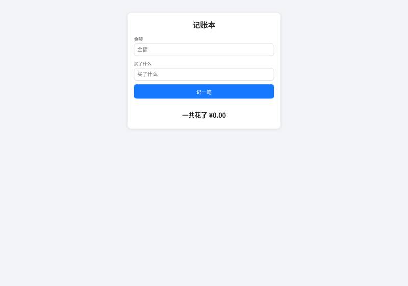
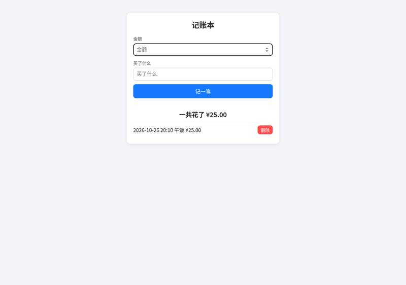
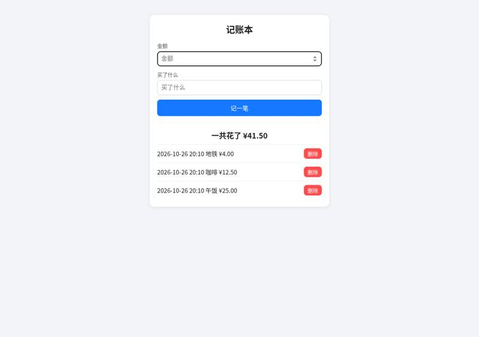
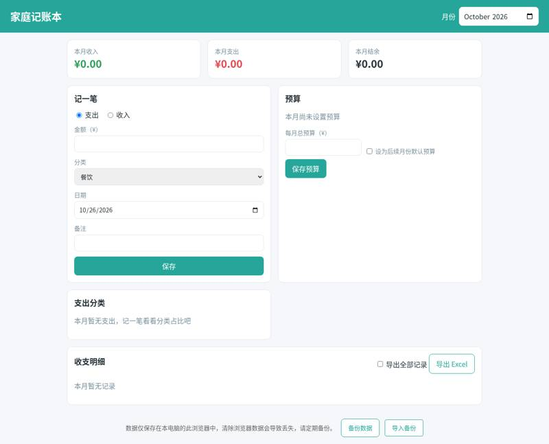
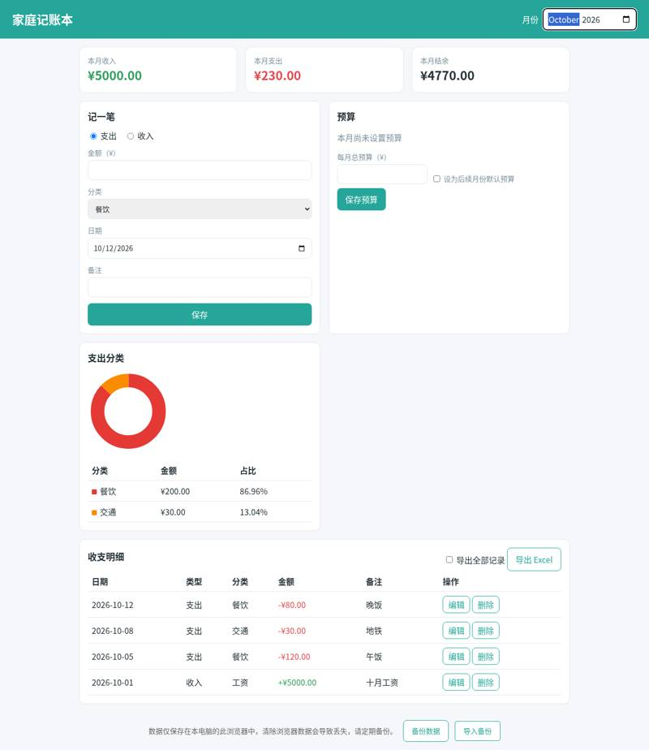
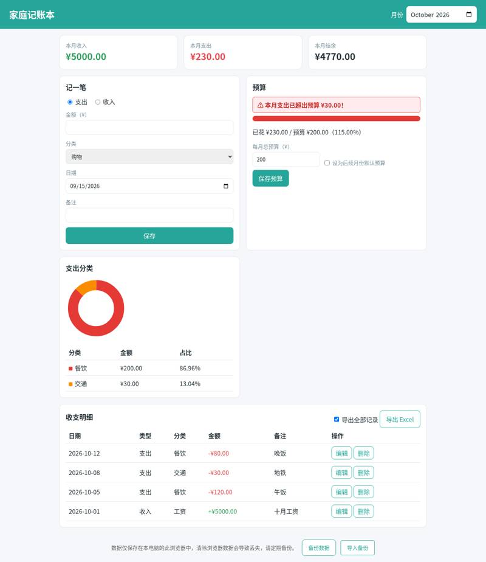
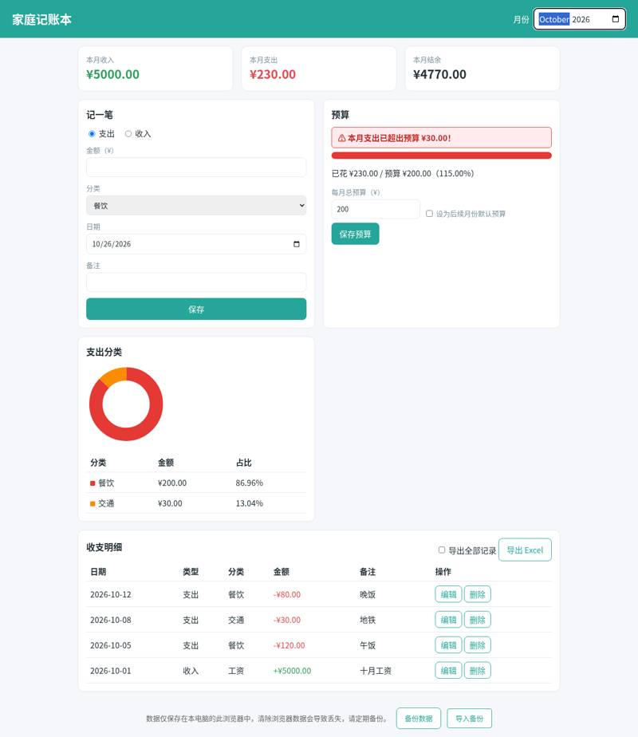

michaelshimeles/ralphy: vibe coding test
Installed from its README in a throwaway sandbox, then used by Claude Code (Claude Opus 5.5) to build two apps from requests written the way someone who cannot code would write them. Whenever the build stopped to ask a question or for approval, it got the same reply. A separate tester session, with no tool loaded, opened each app in a browser and ran the checks; we went through every screenshot. All results · The task · The tester's checks
Install: SETUP: done ralphy-cli 4.7.2 (Ralphy loop runner, default engine Claude Code) via `sudo npm install -g ralphy-cli`, project initialized with `cd ~/work && ralphy --init` (created .ralphy/config.yaml and .ralphy/progress.txt) (repo commit 506eea0e7d72)
One sentence: an expense page
The request, word for word: 帮我做一个记账小网页：每次花钱记一笔（花了多少、买了什么），页面上能看到一共花了多少，关掉浏览器再打开，记录还在。
Ran: all 4 checks passed. Opens: double-click. Built in 12.7 minutes (limit 30); it stopped to ask 0 time(s); how it ended: finished. Usage at API prices: $0.75 (4.4 times the run with no tool). Packages: none (plain HTML, CSS and JavaScript).
| Check | Verdict | What the tester saw | Screenshot |
|---|---|---|---|
| opens | pass | file:// page shows: 记账本 | 金额 | 买了什么 | 记一笔 | | 一共花了 ¥0.00 |  |
| records an expense | pass | 记账本 | 金额 | 买了什么 | 记一笔 | | 一共花了 ¥25.00 | | 2026-10-26 20:10 午饭 ¥25.00 | 删除 |  |
| total is right | pass | 一共花了 ¥41.50; page: 记账本 | 金额 | 买了什么 | 记一笔 | | 一共花了 ¥41.50 | | 2026-10-26 20:10 地铁 ¥4.00 | 删除 | 2026-10-26 20:10 咖啡 ¥12.50 | 删除 | 2026-10-26 20:10 午饭 ¥25.00 | 删除 |  |
| still there after closing and reopening | pass | 一共花了 ¥41.50; page: 记账本 | 金额 | 买了什么 | 记一笔 | | 一共花了 ¥41.50 | | 2026-10-26 20:10 地铁 ¥4.00 | 删除 | 2026-10-26 20:10 咖啡 ¥12.50 | 删除 | 2026-10-26 20:10 午饭 ¥25.00 | 删除 |


Where it stopped, and got the reply 「我不懂这些，你按你推荐的来，继续做。」
- It did not stop to ask.
One paragraph: a family ledger
The request, word for word: 做一个家庭记账本网页：能记收入和支出（金额、类别、日期、备注），能按月看收入、支出和结余，能看每个类别花了多少（最好有图），可以设每月预算、超了要提醒，还能把记录导出成 Excel 表格。数据存在我电脑上就行。
Ran: all 8 checks passed. Opens: double-click. Built in 14.1 minutes (limit 45); it stopped to ask 0 time(s); how it ended: finished. Usage at API prices: $2.07 (2.0 times the run with no tool). Packages: none (plain HTML, CSS and JavaScript).
| Check | Verdict | What the tester saw | Screenshot |
|---|---|---|---|
| opens | pass | file:// page shows title 家庭记账本, form 记一笔; month field = 2026-10 |  |
| records income and expenses | pass | list: 收支明细 | 导出全部记录 导出 Excel | 日期 类型 分类 金额 备注 操作 | 2026-10-12 支出 餐饮 -¥80.00 晚饭 编辑 删除 | 2026-10-08 支出 交通 -¥30.00 地铁 编辑 删除 | 2026-10-05 支出 餐饮 -¥120.00 午饭 编辑 删除 | 2026-10-01 收入 工资 +¥5000.00 十月工资 编辑 删除 | | 数据仅保存在本电脑的此浏览器中，清除浏览器数据会导致丢失，请定期备份。 | | 备份数据 | 导入备份 |  |
| month's income, spending and balance | pass | Oct 2026 income/expense/balance = (5000.0, 230.0, 4770.0) |  |
| spending by category | pass | 支出分类 section: 支出分类 | 分类 金额 占比 | 餐饮 ¥200.00 86.96% | 交通 ¥30.00 13.04% | ; chart elements: 1 |  |
| switches between months | pass | Sep: summary (0.0, 999.0, -999.0), 999 in list=True; back to Oct: (5000.0, 230.0, 4770.0) | |
| warns over budget | pass | budget section: 预算 | ⚠ 本月支出已超出预算 ¥30.00！ | | 已花 ¥230.00 / 预算 ¥200.00（115.00%） | | 每月总预算（¥） | 设为后续月份默认预算 | 保存预算 | | |
| exports a spreadsheet | pass | file 家庭记账本-全部.xlsx: [["日期", "类型", "类别", "金额", "备注"], ["2026-10-12", "支出", "餐饮", 80, "晚饭"], ["2026-10-08", "支出", "交通", 30, "地铁"], ["2026-10-05", "支出", "餐饮", 120, "午饭"], ["2026-10-01", "收入", "工资", 5000, "十月工资"], ["2026-09-15", "支出", "购物", 999, ""]] |  |
| still there after closing and reopening | pass | after restart Oct summary (5000.0, 230.0, 4770.0), Oct records present=True, Sep 999 present=True |  |


Where it stopped, and got the reply 「我不懂这些，你按你推荐的来，继续做。」
- It did not stop to ask.